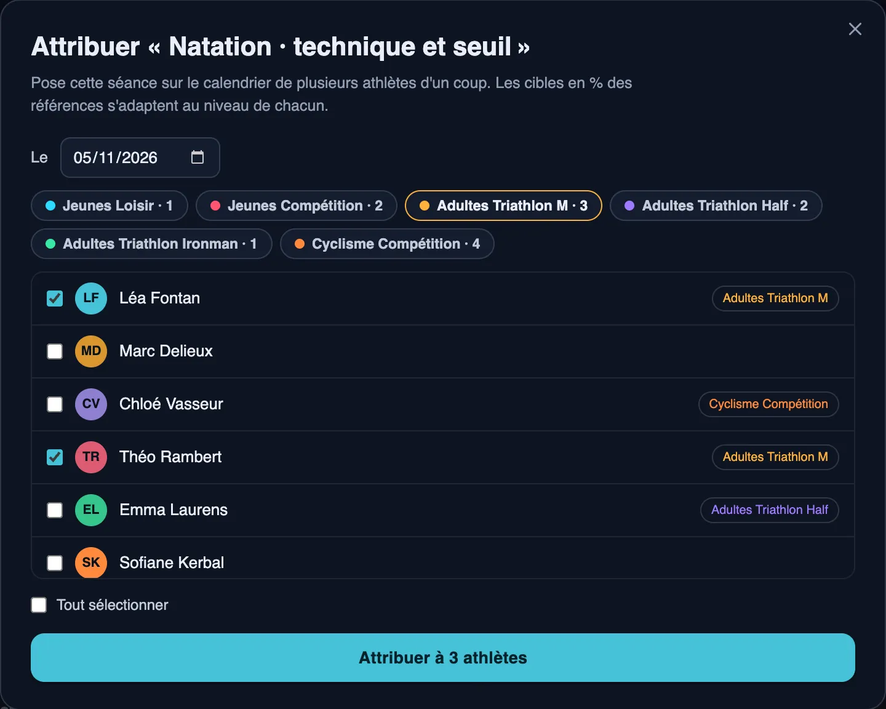
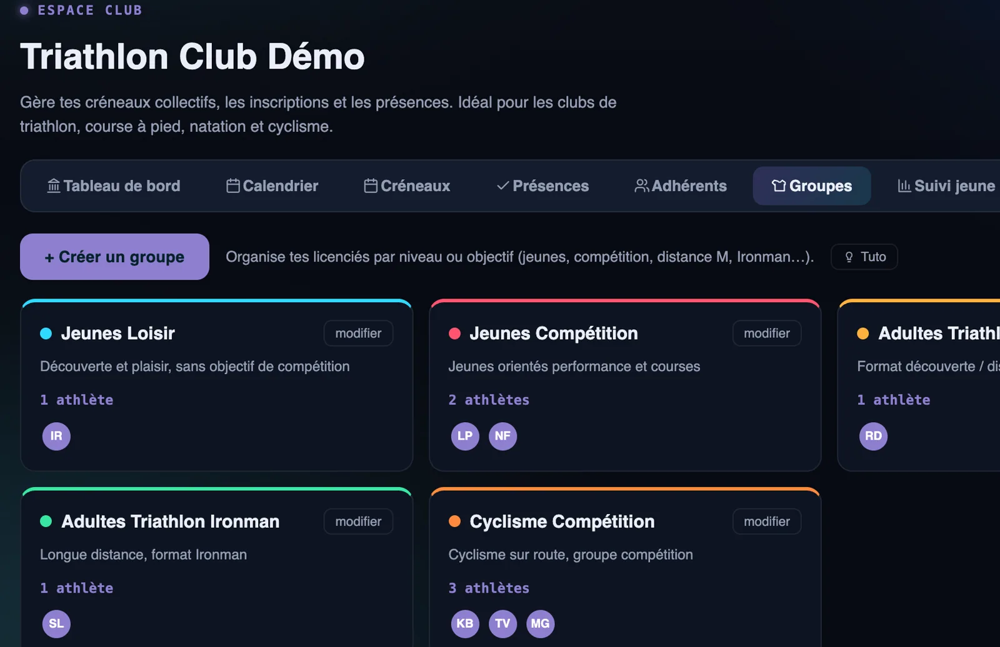
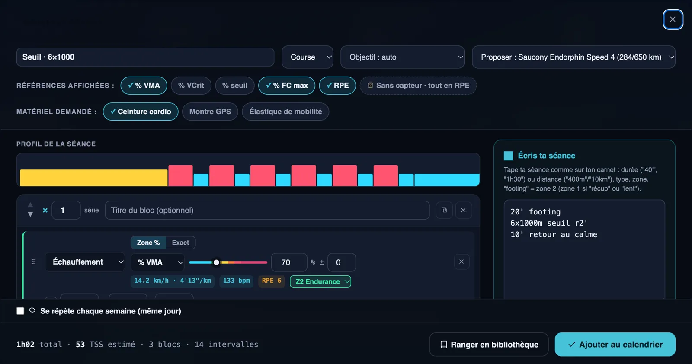
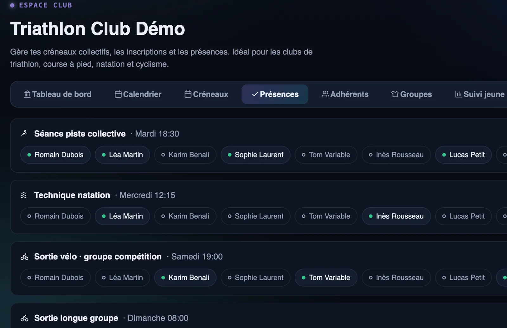
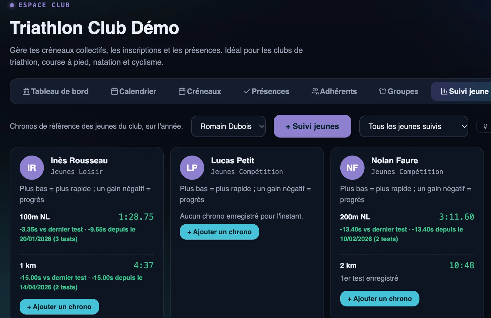
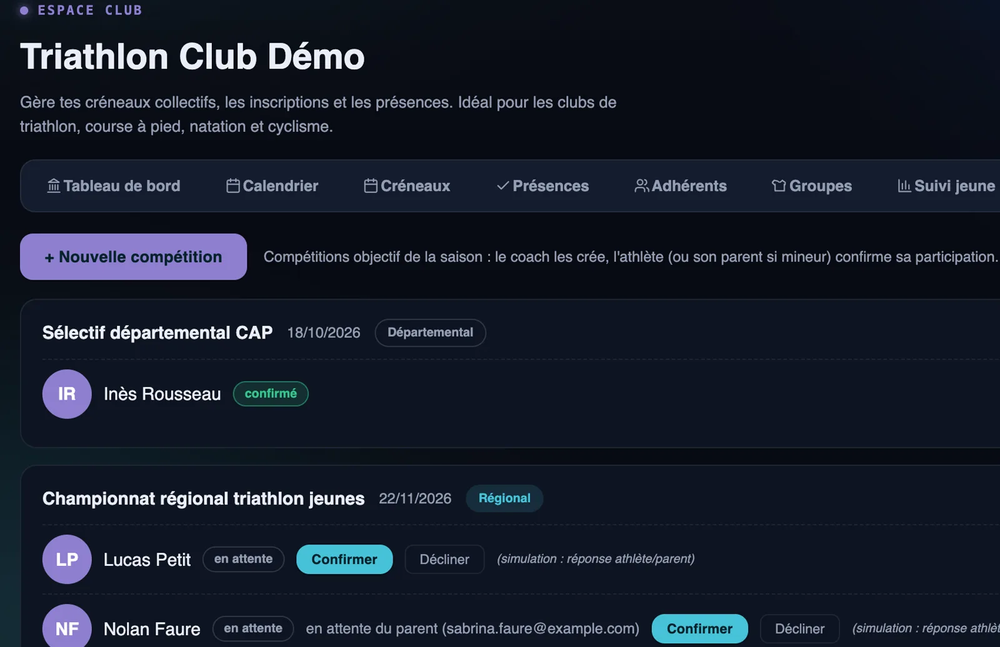
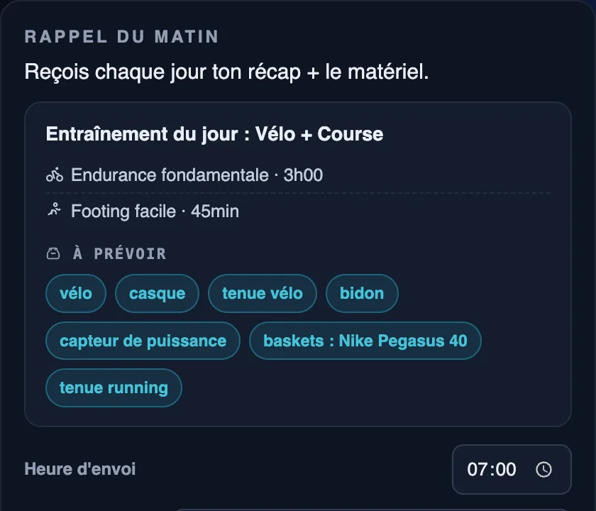

Le logiciel d'entraînement des clubs de triathlon
Programmez les séances de chaque groupe en quelques minutes, envoyez-les sur la montre de vos licenciés, suivez les présences, les jeunes et les compétitions de la saison. Vos entraîneurs passent moins de temps sur l'organisation, et plus sur le bord du bassin.
Entraîneurs illimités · Natation, vélo, course à pied · Données hébergées en Europe

Un club de triathlon, c'est trois sports et des dizaines de profils
Jeunes et adultes, débutants et compétiteurs, distance S ou Ironman : chaque groupe a son plan, ses créneaux et ses objectifs. Les tableurs et les groupes WhatsApp ne suivent plus.
Moins d'organisation
Une séance écrite une fois part à tout un groupe, avec des allures adaptées au niveau de chacun.
Des licenciés mieux préparés
Chaque matin, la séance du jour et le matériel à prévoir. Plus d'oubli de maillot ou de plaquettes.
Un suivi enfin visible
Présences, progression des jeunes, athlètes blessés ou fatigués : tout le club d'un coup d'œil.
Programmer une séance pour tout un groupe
Organisez vos licenciés en groupes : jeunes loisir, jeunes compétition, distance M, half, Ironman… Une séance créée par un entraîneur part en un clic à tout le groupe.
- Les cibles en % de VMA, de FTP ou de CSS s'adaptent aux références de chaque athlète.
- Séances récurrentes : la piste du mardi se programme une fois pour toute la saison.
- Plusieurs entraîneurs sur le même club, sans surcoût.

Écrire une séance comme sur un carnet
Tapez « 8x100m seuil crawl départ 1'50 » ou « 6x1000m seuil r2' » : Sillance construit la séance complète, avec l'échauffement, les répétitions, les récupérations et le profil d'intensité.
- Envoi direct sur les montres COROS, fichier .FIT pour les montres Garmin.
- Matériel demandé par la séance : pull-buoy, plaquettes, palmes, home-trainer…
- Durée et charge d'entraînement calculées automatiquement.

Les présences de chaque créneau, sans feuille papier
Créez les créneaux du club (bassin, piste, sortie vélo), avec leur capacité et leurs groupes, et suivez qui est présent à chaque séance collective.
- Taux de remplissage des créneaux sur le tableau de bord.
- Une séance-type peut être attachée à un créneau.

Suivre la progression des jeunes sur la saison
Les chronos de référence en natation et en course à pied de chaque jeune, d'un test à l'autre : le meilleur temps, l'écart avec le test précédent et le gain depuis le début de la saison.

Préparer les compétitions de la saison
Créez les courses objectifs du club, départementales, régionales ou nationales, ciblez le groupe concerné et suivez qui y participe.

La séance du jour et le matériel à prévoir
Chaque matin, l'athlète reçoit le rappel de sa séance avec la liste du matériel : tenue, baskets, vélo, capteur de puissance, maillot, bonnet, plaquettes… Il arrive au bassin avec tout ce qu'il faut.

Tout ce dont le club a besoin, au même endroit
Qui a besoin de vous
Blessures, fatigue, séances manquées : les athlètes à suivre remontent d'eux-mêmes.
Un lien d'invitation
Un seul lien pour tout le club : chaque licencié crée son compte.
Fil du club
Publiez le programme de la semaine pour tout le club ou un groupe.
Aux couleurs du club
Logo et couleurs du club dans l'application de vos licenciés.
Un prix au nombre d'athlètes, entraîneurs illimités
Club
Grand club
Club illimité
Le détail des offres est sur la page tarifs. Vous êtes un run club ou un club de course à pied ? Voir le logiciel pour run club.
Les questions des clubs de triathlon
Combien d'entraîneurs du club peuvent utiliser Sillance ?
Autant que vous voulez : les entraîneurs sont illimités. Le tarif du club dépend uniquement du nombre d'athlètes suivis.
Nos athlètes ont des montres différentes, ou pas de montre du tout. Ça marche ?
Oui. Les séances s'envoient directement sur les montres COROS, et en fichier .FIT pour les montres Garmin. Sans montre, l'athlète consulte sa séance dans l'application et peut importer ses fichiers .FIT, .TCX ou .GPX.
Comment gérer les jeunes et les athlètes mineurs ?
Le suivi jeunes garde les chronos de référence en natation et en course à pied sur toute la saison. Les compétitions sont ciblées par groupe, ce qui permet de suivre séparément les jeunes et les adultes.
Combien de temps pour mettre le club en place ?
Nous créons l'espace de votre club avec vous. Vous partagez ensuite un lien d'invitation unique : chaque licencié crée son compte, et vous l'affectez au bon groupe.
Où sont hébergées les données des licenciés ?
En Europe, conformément au RGPD. Les données de santé ne sont traitées qu'avec le consentement explicite de l'athlète, qui peut retirer l'accès à tout moment. Le détail est dans la politique de confidentialité.
Combien coûte Sillance pour un club ?
50 € par mois jusqu'à 50 athlètes, 112,50 € jusqu'à 150 athlètes, 150 € jusqu'à 300 athlètes. Les 10 premiers clubs de chaque palier bénéficient d'un tarif fondateur bloqué à vie (25 €, 56,25 € ou 75 € par mois).
On vous montre Sillance sur votre club ?
Une démonstration de 20 minutes avec vos groupes et vos créneaux, aux couleurs de votre club.